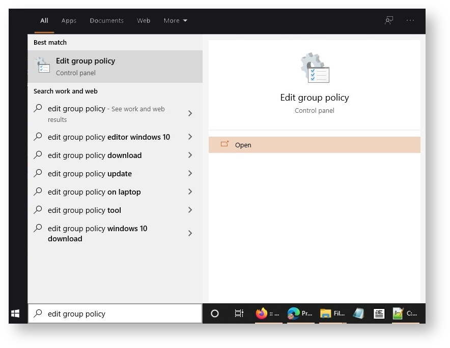
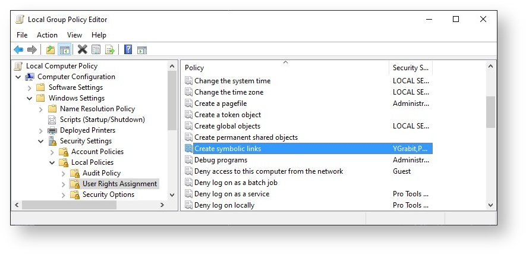

快速上手
获取 VST 3 SDK
| 组件 | as zip package | as GitHub repository |
|---|---|---|
| VSTGUI | ☑ | ☑ |
| VST 3 Project Generator (exe only) | ☑ | ☒ |
| VST 3 Plug-ins Examples | ☑ | ☑ |
| VST 3 Plug-in Test Host (exe only) | ☑ | ☒ |
| VST 3 Licensing | ☑ Proprietary+ GPLv3 | ☒ Only GPLv3 |
| VST 3 API | ☑ | ☑ |
| VST 3 Inspector | ☑ | ☑ |
| Validator command line | ☑ | ☑ |
| iOS Inter-App Audio support | ☑ | ☑ |
| Helpers classes | ☑ | ☑ |
| EditorHost | ☑ | ☑ |
| AudioAudioHost | ☑ | ☑ |
| AAX, AUv3, AU and VST 2 wrappers | ☑ | ☑ |
下载完整的 VST 3 压缩包
下载完整的 VST 3 SDK 包，其中包含构建 VST 3 插件或宿主所需的一切代码。使用 VST 3 Plug-in Test Host 实时并自动化测试你的 VST 3 插件:
https://www.steinberg.net/vst3sdk (zip 文件, 101 MB)
从 GitHub 克隆 VST 3 存储库
从 GitHub 克隆 VST 3 SDK 存储库，以便轻松集成到您的工作区：
请确保遵守许可协议（参考 VST 3 的许可选项是什么？）
在线文档
浏览包含 API 参考和示例代码的 VST3 SDK 在线文档：
https://steinbergmedia.github.io/vst3_doc
浏览整个文档和教程的 VST 网站：
https://developer.steinberg.help/display/VST
VST 3 Forum
访问 Steinberg 的 VST 开发者论坛，以获得开发方面的帮助、提交错误报告、提交新功能请求和联系其他 VST 3 开发者：https://sdk.steinberg.net
VSTGUI
当你下载 VST 3 SDK时，它包含 VSTGUI的最后一个正式发布版本，你也可以获得它（发布和开发分支）来自 github：https://github.com/steinbergmedia/vstgui
获取源代码
From the downloaded vstsdk.zip file
下载 VST 3 SDK: VST 3 SDK Download.
解压zip文件到你电脑的开发文件夹中
From GitHub:
git clone --recursive https://github.com/steinbergmedia/vst3sdk.git
获取用于开发的 IDE
For Windows
在 Windows上，我们建议您使用 Visual Studio C++ 或 Visual Studio Code， 您可以在此处免费获得： https://visualstudio.microsoft.com/free.
For MacOS
在 MacOS 上，首选是 Xcode（ https://developer.apple.com/xcode/）。
For Linux
为了成功构建 SDK，您需要一个基于 Ubuntu 的 Linux 发行版。其他的发行版也可能生效，但未经过测试。
- 下载 Linux: http://www.ubuntu.com or https://www.linuxmint.com
- 直接安装或在 Parallels 等虚拟机中安装 教程是在 Ubuntu 20.04 LTS 上使用和测试。
Package要求
构建 SDK 示例需要安装几个包：
必要的:
sudo apt-get install cmake gcc "libstdc++6" libx11-xcb-dev libxcb-util-dev libxcb-cursor-dev libxcb-xkb-dev libxkbcommon-dev libxkbcommon-x11-dev libfontconfig1-dev libcairo2-dev libgtkmm-3.0-dev libsqlite3-dev libxcb-keysyms1-dev
在 Raspbian/Debian 系统, 使用 "libxcb-util0-dev" 替代 "libxcb-util-dev"
可选的:
sudo apt-get install subversion git ninja-build
推荐的 IDE (可选的): QTCreator
sudo apt-get install qtcreator
你还可以使用 VST3_SDK/tools 文件夹中包含的 bash 文件 "setup_linux_packages_for_vst3sdk.sh"
- 可使用 gcc 编译器，也可以使用 clang 编译器的最新版本
- VSTGUI 和 editorhost 示例需要 libgtkmm3
- audiohost 示例需要 Jack Audio (http://www.jackaudio.org)
获取 cmake
为了控制编译过程和创建 IDE 项目，**VST 3 SDK **使用了开源跨平台工具 cmake
可以在此处下载 cmake：https://cmake.org/download/ 或使用你操作系统 (Linux) 的包管理器。
您可以将其用作命令行工具或带有 GUI 的 cmake 可执行文件。cmake-gui 包含在cmake包里面:

在 Windows 上准备
使用 SDK 中包含的 cmake 生成的 VST3 Microsoft Visual Studio 项目将默认为 官方 VST 3 文件夹中的每个内置插件创建 symbolic 链接，为了在 Windows 上运行，您必须调整 Windows 的组策略。看 这里!
如果您不想创建此链接，请使用此参数调用 cmake：
-SMTG_CREATE_PLUGIN_LINK=0
Windows 的注意事项：为了能够创建符号链接，您必须设置正确的组策略。进行如下操作：
- 计算机配置 => Windows 设置 => 安全设置 => 本地策略 => 用户权限分配 => 创建符号链接

导航：
计算机配置 => Windows 设置 => 安全设置 => 本地策略 => 用户权限分配 => 创建符号链接

您可以在此处设置哪些用户可以创建符号链接。
获取 VST 3 宿主程序
您可以使用您最喜欢的 VST 3 宿主应用程序，请参阅此处以获得一些示例，或者您可以使用 VST 3 插件测试宿主 应用程序（已包含在 VST 3 SDK 中）。